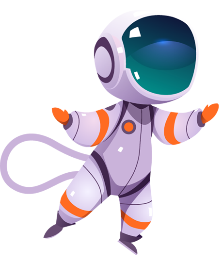

La depresión en los adolescentes: Algo más que mal genio
Ser adolescente puede ser difícil, pero no deberías sentirte desalentado. Si has estado triste la mayor parte del tiempo durante algunas semanas o más y no puedes concentrarte o hacer las cosas que disfrutabas, habla con un adulto de confianza sobre la depresión.
¿Tengo depresión?
Tristeza
A menudo, ¿te sientes triste, ansioso, inútil o incluso “vacío”?
Desinterés
¿Has perdido interés en las actividades que antes disfrutabas?
Enojo
¿Te sientes frustrado, irritable o te enojas con facilidad?
Distancia
¿Te alejas de tus amigos y familiares?
Desaprobado
¿Han bajado tus calificaciones?
Descuidado
¿Han cambiado tus hábitos alimenticios o de sueño?
Agotado
¿Te sientes agotado o se te olvidan las cosas?
Peligro
¿Has pensado en suicidarte o hacerte daño?
La depresión no es igual en todos. Es posible que tengas muchos de los síntomas enumerados anteriormente o solo unos pocos
Sobre la depresión
Es normal que los adolescentes se pongan tristes, se sientan desanimados, estén irritables o decaídos de vez en cuando. Pero, cuando los sentimientos y los pensamientos negativos se prolongan durante mucho tiempo y limitan la capacidad del adolescente para funcionar con normalidad, se puede tratar de una depresión.
Puede ser difícil, tanto para los padres como para otros adultos, saber si un adolescente está deprimido. El malhumor y la irritabilidad se pueden ver como una actitud negativa e irrespetuosa. El nivel de energía bajo y la falta de interés se pueden ver como vagancia y el no querer ni siquiera intentarlo. Los padres (al igual que los mismos adolescentes implicados) pueden no ser conscientes de que este comportamiento sea un signo de depresión.
Debido a que la depresión se puede manifestar de formas diferentes y puede ser difícil ver, va muy bien explicar al médico si los sentimientos de tristeza o de decaimiento parecen persistir durante varias semanas.
"Las tormentas no duran para siempre, y la luz del sol siempre vuelve a brillar."
El diagnóstico de la depresión y de otros trastornos del estado de ánimo
Al diagnosticar una depresión y otros trastornos similares del estado de ánimo, los médicos y los profesionales de la salud mental distinguen entre varias categorías distintas. Todas ellas se asocian a un estado de ánimo decaído como síntoma principal, pero se desarrollan de formas diferentes. Por ejemplo:
La depresión mayor
Es un fuerte o intenso episodio depresivo de desarrollo reciente y que dura un mínimo de dos semanas.
La depresión crónica
(también conocida como “distimia”) es una depresión más leve que se desarrolla de una forma más gradual y que dura dos años o más
El trastorno de adaptación con ánimo depresivo
es una depresión que se desarrolla a consecuencia de un acontecimiento angustioso, desde una catástrofe natural hasta la muerte de un ser querido.
El trastorno afectivo estacional
es un tipo de depresión que está relacionado con la exposición al sol. Se desarrolla cuando se reducen las horas de luz solar; por ejemplo, en los meses de invierno.
El trastorno bipolar
(también conocido como depresión maníaca o depresión bipolar) es una afección caracterizada por episodios de depresión mayor que se alteran con episodios de manía (energía y alegría exacerbadas).
El trastorno de desregulación del estado de ánimo disruptivo
(o perturbador) es un patrón de rabietas intensas y frecuentes; estallidos de agresividad y enfado; y un estado habitual de irritabilidad de una duración mínima de un año en un niño mayor de 6 años.

¿Cómo obtengo ayuda para la depresión?
La depresión y otros trastornos del estado de ánimo pueden mejorar cuando reciben la atención profesional y los cuidados adecuados. Los problemas prosiguen o empeoran cuando no se tratan.
"Nunca estás solo. Hay personas dispuestas a ayudarte y apoyarte."
Más formas de ayudar
El tratamiento con un terapeuta es importante. Pero usted también tiene un papel importante. En el colegio las siguientes pautas sencillas pero muy poderosas, pueden ayudar a los adolescentes a afrontar una depresión.
Habla con un adulto de confianza
(como tu padre o tutor, maestro o consejero escolar) y dile cómo te sientes.
Pregúntale a tu médico
sobre las opciones de ayuda profesional. La depresión se puede tratar con psicoterapia (también llamada "terapia de diálogo"), medicamentos o una combinación de ambas opciones.
Trata de pasar tiempo con tus amigos o familiares
incluso si no lo quieres hacer.
Mantente activo y haz ejercicio
aun si es solo salir a caminar. La actividad física libera sustancias químicas en el cerebro, como endorfinas, que pueden ayudarte a sentirte mejor.
Trata de mantener un horario de sueño regular
Dormir a horas regulares promueve un descanso saludable y rejuvenecedor.
Come alimentos saludables
Nutrir el cuerpo con opciones nutritivas y equilibradas.
"Las personas que ayudan a otras a brillar saben que hay espacio para todos"